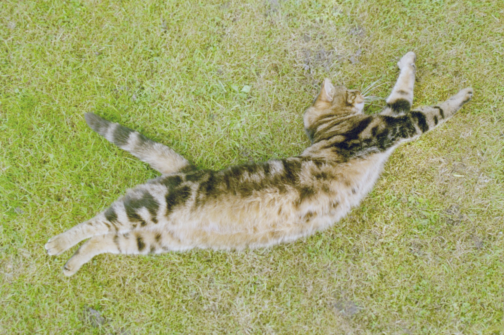
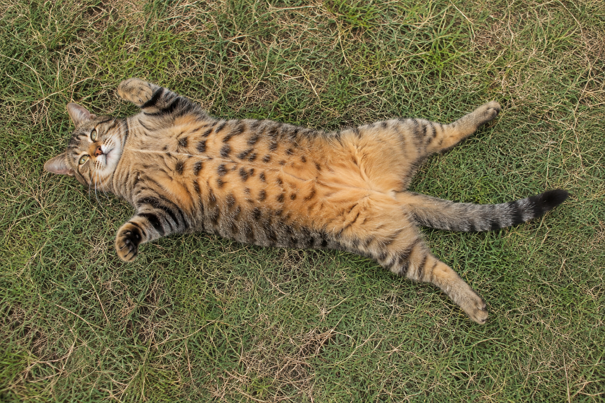
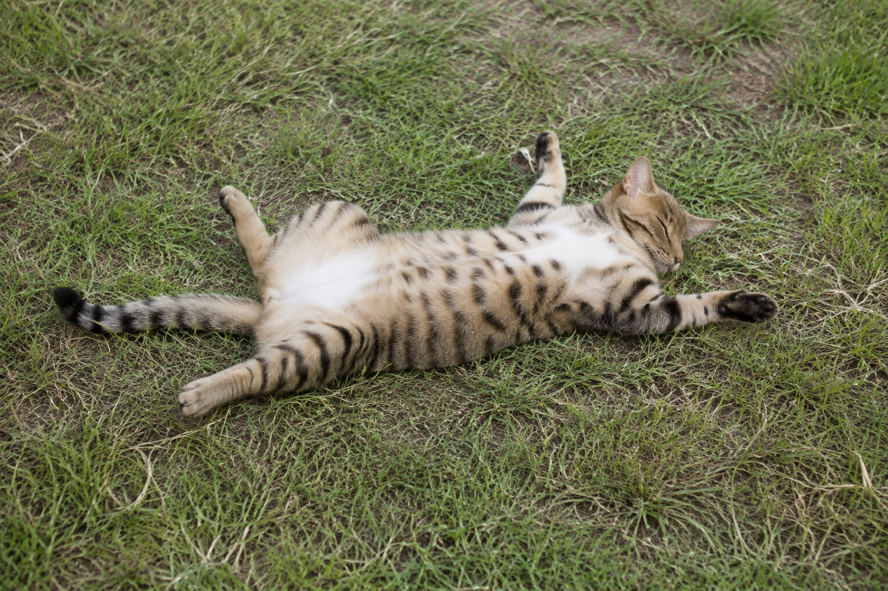

CASE cat-on-grass-detailed
FAIL
Cat stretched on grass · refined



Visual proxy0.579
Layout0.683
dHash0.453
Palette distance0.084
Visual proxy change: 0.595 → 0.579 (-0.016)
280.1:1 artifact ratio · 799,983 → 2,856 bytes
Prompt and machine-readable result
Use case: photorealistic-natural Asset type: semantic reconstruction benchmark Primary request: A light brown and black striped tabby cat with a white underbelly lies on its back on green grass, paws splayed outward, head turned to the right, tail extended to the left, viewed from above with natural daylight. Fidelity goal: Maximize resemblance to this specifically described subject. Prioritize distinctive markings, proportions, pose landmarks, crop, and object geometry over generic beauty or creative interpretation. Style/medium: photographic, natural daylight, shallow depth of field, soft focus on background, sharp focus on cat Canvas: landscape 3:2 aspect ratio. Composition, using a normalized 0–1000 coordinate grid: - Entire canvas: short, uneven green and brown grass blades with a few small patches of bare earth. - Cat bbox approximately x=87 to 939, y=148 to 826; centrally positioned, body runs left-to-right, occupies roughly 60% of canvas width and 30% of height. - Head at upper-right of body, centered near x=665 y=313; turned right; light brown fur with dark neck stripes; upright ears; visible whiskers; eyes closed; nose and mouth not clearly visible. - Torso on its back with white underbelly exposed; light brown coat and distinct dark-brown-to-black vertical stripes along back and sides. - Front paws extend upward and outward; hind paws splay toward the left. - Ringed tail starts near mid-body, extends about 20% of canvas width toward the left, with a slightly curved tip near the left side. Color palette: muted grass greens #8B9A5B #A5C05B #4A5D27; cat tan #D4B483 with dark stripes. Constraints: preserve every described landmark and spatial relationship. Exactly one cat. Add no collar, objects, flowers, people, logos, text, watermark, or extra markings. Natural imperfect documentary photograph, not a polished stock photo or illustration. Avoid: changing the cat into an upright, curled, or side-lying pose; moving the head to the left; hiding the white belly; shortening the ringed tail; symmetrical staged posing.
Your assessment
Source: Clavecin · Public domain dedication · reconstruction generated from text only
{kind=link}
{kind=link}
{kind=link}
{kind=link}
{kind=link}
{kind=link}